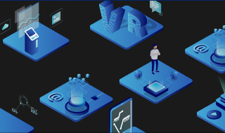

-

-
数据管理现代化
Db2
混合数据管理 前往
人工智能数据库 播放
埃克森美孚和IBM:利用数据为人工智能旅程加油 播放
IBM Db2 Warehouse动手实验室 前往
探索Data Server Manager 前往
组织数据
Watson Knowledge Catalog,DataStage,InfoSphere
IBM数据运营 前往
Vanguard凭借领先数据隐私优势，加速数字化转型 播放
IBM Watson Knowledge Catalog发现数据和分析资产，以支持人工智能 播放
IBM Watson Knowledge Catalog 播放
创建 IBM Watson Knowledge Catalog 播放
探索知识目录的数据治理功能 前往
-
人工智能之旅
人工智能之旅 播放
30秒解读通往人工智能之旅 播放
CxO指南-利用现代 AI 加快规模化增长 播放
-
AI 赋能的IT 运维
Watson AIOps
Watson AIOps 播放
IBM智能运维解决方案打造认知型IT 模式 播放
IBM 认知型运维解决方案 播放
-
数据科学与人工智能
Watson Stuido,Watson Machine Learning,Watson Openscale
数据科学和 AI 播放
KPMG：使用 Watson OpenScale 管理负责任的 AI 播放
使用 IBM Data Science 自动化 AI 生命周期管理 播放
使用 IBM Watson Studio & Watson Machine Learning简化您的AI之旅 播放
使用Watson OpenScale监控性能偏差和可解释性的信用风险 播放
通过 IBM Watson Machine Learning 运行人工智能模型 播放
使用IBM Watson OpenScale监视机器学习模型 播放
-
AI 赋能的客户服务
Waton Assistant,Watson Discovery,Watson Applications
基于Watson Assistant的自动驾驶助手 播放
Watson Assistant 演示 播放
Watson 客户服务 播放
Watson Assistant搜索能力 播放
浏览 Watson Assistant：创建一个聊天机器人 播放
-
AI 赋能的风险管理
Openpages with Wason,Safer payments,Financial crime insights
IBM OpenPages with Watson 播放
IBM Safer Payments 播放
IBM Financial Crimes Insight for Claims Fraud 播放
-
行业聚焦
IBM Watson 与纪念斯隆-凯特琳癌症中心 播放
Geisinger + IBM:用数据科学对抗败血症 播放
苏格兰皇家银行(Royal Bank of Scotland)分享对话式人工智能是如何推动业绩 播放
-
AI 赋能的财务及业务分析
Planning Analytics and Cognos
TM1® 支持的 IBM Planning Analytics 播放
IBM Cognos Analytics 播放
西捷航空应用IBM Cognos Analytics成功案例 播放
制定协调统一的计划 播放
浏览 IBM Planning Analytics：构建一本收入计划书 播放
-
一体化的数据与 AI 平台
Cloud pak for data,IBM public Cloud
数据现代化：为 AI 做好数据准备 播放
基于红帽OpenShift 的Cloud Pak for Data轻松整合数据和人工智能到应用 播放
快速部署企业级 AI 平台 – IBM Cloud Pak for Data 播放
IBM Cloud Pak for Data - 产品演示 播放
IBM Cloud Pak for Data 数据虚拟化 播放
在IBM云上托管的OpenShift中部署IBM Cloud Pak for Data 播放
-
IBM Garage
IBM Garage 播放
IBM Garage Method for Cloud 现场指南 播放